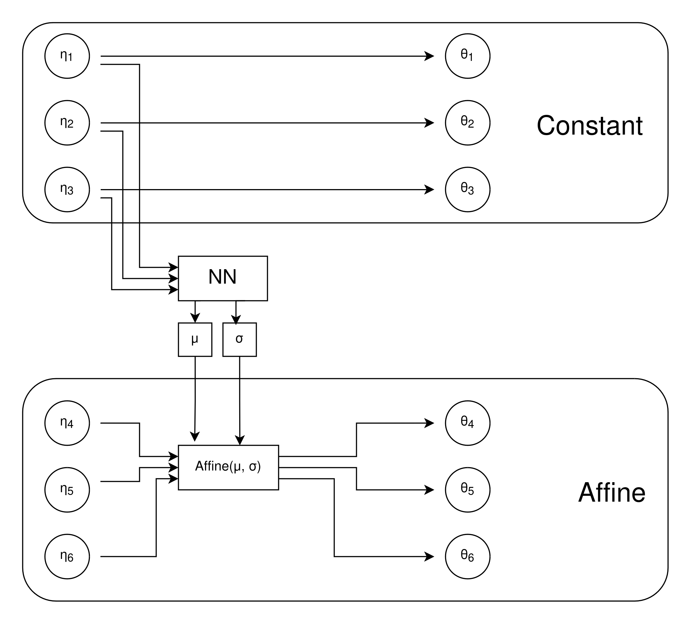
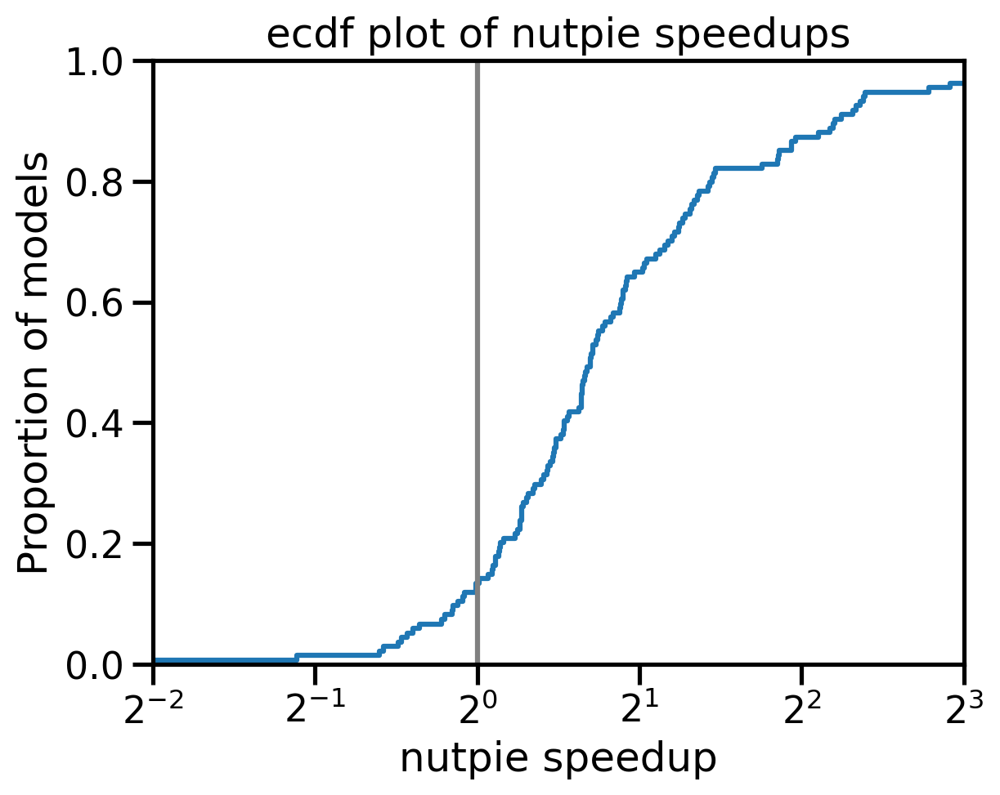

## If Only My Posterior Were Normal: Introducing Fisher HMC Adrian Seyboldt Notes: I'm Adrian Seyboldt, core dev of PyMC (python lib for bayesian stats) Work with PyMC Labs, consultency. Fisher HMC is family of HMC sampling algorithms that uses the Fisher divergence to automatically reparameterize models during tuning. It is implemented in the Nutpie sampler for PyMC and Stan models. Different families of reparametrizations have different properties. I will show how 3 different choices: - Elementwise scaling: This corresponds to diagonal mass matrix adaptation. Fast, but does not converge for many models. This is the default in nutpie. - Low rank modified diagonal: Similar to elementwise scaling, but with a low rank modification. Allows to fit some posterior correlations. - Normalizing flows with coupling layers: This is a more general reparametrization that can fit any posterior. It is slower and requires optimization during tuning, but is very flexible. --- In Bayesian statistics, we want to sample from the posterior distribution, which is defined by a non-normalized density function $\pi(\theta)$. Variants of Hamiltonian Markov Chain Monte Carlo (HMC) are the most popular methods to sample from these distribution --- ## Difficulties with HMC - Not all distributions can be sampled - Choice of parametrization matters *Huge* issue in practice! Notes: In practice, we often have to deal with densities that HMC can not deal with well. A lot of time is spent on finding ways to specify the models (parametrizations) such that the posterior is well behaved. Often, this also depends on the dataset. So a particular parametrization of a model might work well for one dataset, but not for another. --- ## Goal of Fisher HMC We want to automate the process of finding a good parametrization. A more robust HMC, even if it is slower, would be a big win. --- ## Prior art - Mass matrix adaptation: Adapt the mass matrix of the HMC sampler during tuning. This is a form of reparametrization. - Variational inference: Find a good parametrization by minimizing the KL divergence between the posterior and a simpler distribution. Then, in a second step, sample from the transformed distribution. - Riemannian HMC: Somehow come up with a local metric and take that into account during sampling. Notes: I started trying to improve the mass matrix adaptation. Later, I realized the method could be generalized, more similar to VI. Can also be interpreted as a riemannian hmc. --- ### What is a Reparametrization? Posterior defined on space $X \subset \mathbb{R}^n$. Bijective function $F: Y \to X$: <p> $$ \begin{align*} F(\eta) &= \theta \\ F^{-1}(\theta) &= \eta \end{align*} $$ </p> We get a new density $$\nu(\eta) = \pi(F(\eta)) \cdot \lvert \text{det } d F(\eta)\rvert$$ --- ### Examples $$ \sigma \sim N^+(0, 1) $$ So $X = \mathbb{R}^+$ and for instance $F(\eta) = \exp(\eta) = \sigma$. --- Rescaling variables: $$ x \sim N(0, 1000) $$ Reparametrization $F(\eta) = 1000 \eta = x$ --- <div> $$ \begin{align*} \sigma &\sim N^+(0, 1) \\ x &\sim N(0, \sigma^2) \end{align*} $$ </div> We might want to use $F(\eta_0, \eta_1) = (\exp(\eta_0), \exp(\eta_0) \eta_1) = (\sigma, x)$. --- <section data-auto-animate> <h2> HMC </h2> Choose $\theta_0$ and $v_0 \sim N(0, 1)$ Repeat leapfrog steps: <p> $$ \begin{align*} v_{n+1} &= v_n + \frac{\epsilon}{2}\nabla \log \pi(\theta_n) \\ \theta_{n+1} &= \theta_n + \epsilon v_{n+1} \\ v_{n+1} &= v_n + \frac{\epsilon}{2} \nabla\log\pi(\theta_{n+1}) \end{align*} $$ </p> Accept or reject $\theta_n$. </section> --- <section data-auto-animate> <h2> Transformed HMC </h2> Choose $\eta_0 = {\color{blue}F^{-1}(\theta_0)}$ and $v_0 \sim N(0, 1)$ Repeat leapfrog steps: <p> $$ \begin{align*} v_{n+1} &= v_n + \frac{\epsilon}{2}{\color{blue}\nabla \log \nu(\eta_n)} \\ \eta_{n+1} &= \eta_n + \epsilon v_{n+1} \\ v_{n+1} &= v_n + \frac{\epsilon}{2} {\color{blue}\nabla\log\nu(\theta_{n+1})} \end{align*} $$ </p> Accept or reject $\theta = {\color{blue}F(\eta_n)}$. </section> --- The proposal only depends on the gradient of the log density $\nabla \log\nu$, not the density itself! Standard normal posteriors work well, so we want $$ \nabla\log\nu(\eta) \approx \nabla\log N(\eta\mid 0, I) $$ Or we want this to be small: <p> $$ \begin{align*} &\mathbb{E}_{\nu(\eta)}[\lVert \nabla\log\nu(\eta) - \nabla\log N(\eta\mid 0, I)\rVert^2]\\ &= \mathbb{E}_{\nu(\eta)}[\lVert \nabla\log\nu(\eta) + \eta \rVert^2] \end{align*} $$ **Fisher divergence** with a natural choice of norm </p> --- Family of bijections $F_\lambda$. Given posterior draws $\theta_i$ and scores $s_i$ in the original space $X$ we minimize the Monte Carlo estimate of the fisher divergence to find $\mu$: $$ \hat{\mu} = \text{argmin}_\mu \sum_i\lVert F^*(s_i) + F^{-1}(\theta_i)\rVert^2 $$ --- ### Note: Compute scores on $Y$ based on scores on $X$ Given $\nabla \log \pi(\theta)$, we can compute $\nabla \log \nu(\eta)$: ```python def grad_of_nu(theta, grad_theta): eta = F_inv(theta) _, pull_grad_fn = jax.vjp(F_and_logdet, eta) grad_eta = pull_grad_fn((grad_theta, 1.)) return grad_eta ``` --- ## Fisher HMC Choose some bijection $F_0$. Repeat: 1. Generate $\theta$ and $s$ using HMC with bijection $F_i$ 2. Fit $F_{i+1}$ by minimizing Fisher Divergence on $\theta$ and $s$. <ul class="fragment"> <li>Which family of bijections?</li> <li>How do we minimize?</li> </ul> --- ### Comparison to VI Family of parametrizations: $F_\lambda$ $p_\lambda(\eta) = (F_\lambda^\*\pi)(\eta),\quad q(\eta) = N(\eta\mid 0, I)$ Loss in Fisher HMC: $$ \min_\lambda \int \lVert \nabla \log q(\eta) - \nabla \log p_\lambda(\eta) \rVert^2 p_\lambda(\eta) d\eta $$ Loss in Variational Inference: $$ \min_\lambda \int (\log q(\eta) - \log p_\lambda(\eta)) q(\eta) d\eta $$ --- ## Possible extension We are still not using the density! Possible extensions: - Minimzie sum of KL divergence and Fisher divergence - Minimize Sobolev norm $\int \lVert \nabla f(x) \rVert^2 + \int f(x)^2$ Using only the Fisher divergence seems to be better? --- ## Choices for bijections - Coordinate-wise affine functions: Diagonal mass matrix adaptation - Affine functions: Full mass matrix adaptation - Affine functions with few non-unit eigenvalues: Low rank modified mass matrix adaptation - Normalizing flows - Model-informed families --- ### Coordinate-wise affine $$ F(x) = \sigma \odot x + \mu $$ Closed form solution for the optimization problem! <p> $$ \sigma = \sqrt{\frac{\text{Std}(\theta_i)}{\text{Std}(s_i)}} \quad \mu = \text{Mean}(\theta_i) + \sigma^2 \odot \text{Mean}(s_i) $$ </p> Minimizes $\sum (\lambda_i + \lambda_i^{-1})$. Mass matrix $M = \text{diag}(s)^{-2}$. --- ### Affine bijections $$ F(x) = Ax + \mu $$ Closed form solution for optimization problem: <p> $$ \begin{gather*} AA^T \text{Cov}(s) AA^T = \text{Cov}(\theta) \\ \mu = \text{Mean}(\theta) + AA^T \text{Mean}(s_i) \end{gather*} $$ </p> Mass matrix $M^{-1} = AA^T$. --- ## Low-rank modifications $F(x) = D(U(\Lambda - I)U^T + I)x$ Greedy closed form minimum. First find $D$, then $U$ and $\Lambda$. Allows fitting some eigenvalues in high dimensional spaces without quadratic cost. Somehow doesn't work all that well? --- ### Normalizing flows: Other families of functions for $F$. We need: - Evaluations of $F$ - Evaluations of $F^{-1}$ - Logdet of $F$ - Autodiff of those --- Can we generalize the affine function family? Problem: The parameters of $\text{Affine}$ are always the same! We want to scale parameters depending on other values, but the function needs to stay invertable, with easy to compute logp. --- ### RealNVP  --- ### RealNVP Fix some parameters $\eta_{0:k}$ <p> $$ F(\eta) = \text{Concat}(\eta_{0:k}, \\ \text{Affine}(\text{NN}_\mu(\eta_{0:k}), \text{NN}_\sigma(\eta_{0:k}))(\eta_{k:n})) $$ </p> Several layers of those with different subsets of parameters. No closed form minimization, we need to minimize with adam or similar --- ### Some modifications to RealNVP: - Parameterize scaling variables as $\exp(\sinh(x))$. - Replace affine transformations with non-linear function. - We choose systematically, which parameters to keep constant. - Additional MvScale layers that scales the space in a particular direction - Low rank approximations for the hidden layers in the NNs for higher dimensional problems --- - Can deal with a much wider range of posteriors! - Speedups for many badly conditioned models - Extra cost for well behaved models --- ### Future? Specialized reparametrizations based on the model. Could be much cheaper than black box methods like neural networks? --- ### Implementation status - Diagonal: Used in nutpie, might become default in PyMC and Stan? - Low rank: Implemented in nutpie - Normalizing flows: nutpie PR, getting merged soon --- ## Results from posteriordb --- ### Diagonal  --- ## Normalizing Flow <img src="plots/nutpie-nf-ess.png" width="60%"/> --- Feedback and benchmarks welcome! @aseyboldt on discourse or github. Questions? Notes: I hope I could make you curious. If you want to give it a go and try it, see QR code... Feedback and benchmarks welcome. Please report bugs